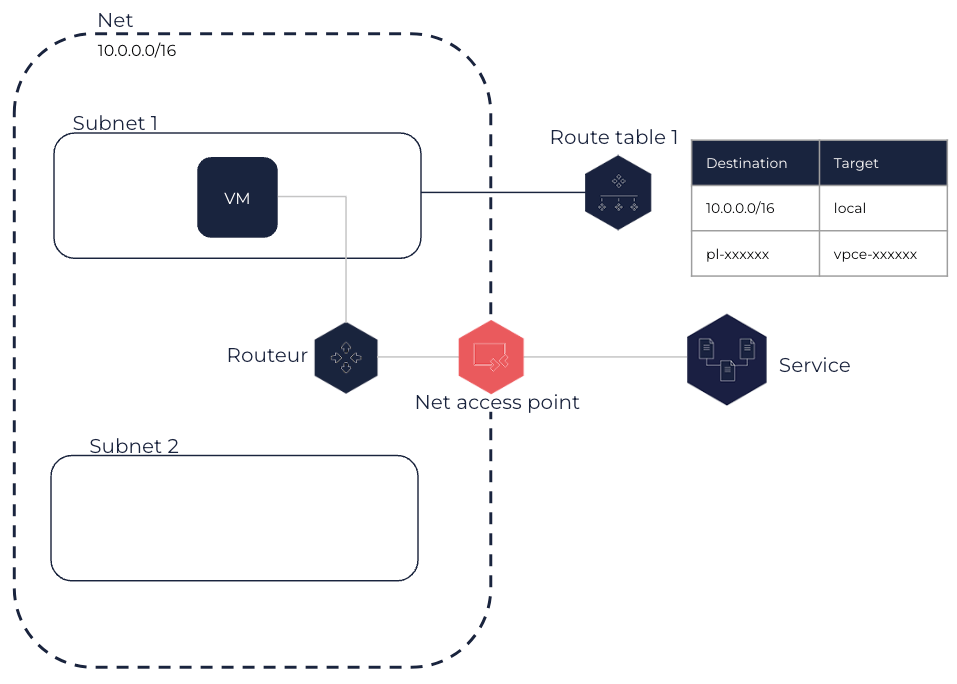

À propos des Net access points
Les Net access points (points d’accès réseau) permettent aux machines virtuelles (VM) placées dans un Net d’accéder à un autre service OUTSCALE en utilisant une connexion privée, sans utiliser une connexion VPN ou DirectLink.
Pour en savoir plus sur les services OUTSCALE, voir À propos des API et OUTSCALE Object Storage (OOS).
Les Net access points vous permettent de créer une connexion privée entre votre Net et un autre service OUTSCALE au sein de la même Région que le Net. Avec un Net access point, les VM de votre Net communiquent avec les ressources de l’autre service en utilisant leurs IP. Lorsque vous utilisez cette solution, le trafic réseau reste au sein du réseau OUTSCALE.
|
Lorsqu’un Net access point est créé, une IP publique est automatiquement allouée à votre compte et utilisée pour le Net access point. Cette IP publique n’est pas connectée à Internet. Elle n’est pas facturée mais est comptabilisée dans votre quota. |
Lorsque vous créez un Net access point, vous spécifiez le nom de la prefix list du service, qui correspond à la liste des préfixes réseau utilisés par ce service en notation CIDR. Chaque prefix list est composée d’un ID au format pl-xxxxxxxx, et d’un nom au format com.outscale.<REGION>.<SERVICE> pour identifier le service auquel elle est associée.
Vous devez également spécifier une ou plusieurs route tables à associer au Net access point, lorsque vous créez celui-ci ou après sa création. Les routes appropriées sont ensuite automatiquement ajoutées à ces route tables pour router le trafic des Subnets qui leurs sont associés destiné au service vers le Net access point. Ces routes ont l’ID de la prefix list correspondante en destination, représentant la plage d’IP utilisée par le service, et l’ID du Net access point en target. Toutes les VM placées dans ces Subnets utilisent donc le Net access point pour accéder au service au sein de la Région du Net.

|
Le security group par défaut de votre Net autorise tout les flux sortants. Si vous avez créé votre propre security group ou modifié la règle pour les flux sortants de ce security group par défaut, vous devez ajouter une règle autorisant le trafic sortant vers le service approprié. Pour cela, vous pouvez utiliser l’ID de sa prefix list. Pour en savoir plus, voir Ajouter des règles à un security group.
Vous ne pouvez pas transférer un Net access point vers un autre Net. Vous devez en créer un nouveau et, si besoin, supprimer le précédent.
Un Net access point peut être dans un des états suivants :
-
Pending : Le processus de création est en cours.
-
Available : Le Net access point est créé et peut être utilisé pour envoyer du trafic vers un service OUTSCALE.
-
Deleting : Le processus de suppression est en cours.
-
Deleted : Le Net access point est supprimé.
Pages connexes